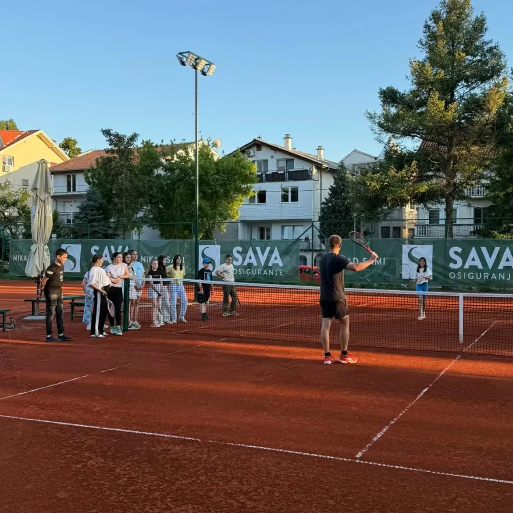

Prvi trening je mnogo opušteniji kada znaš šta da poneseš. Ne treba mnogo opreme, ali par stvari pravi veliku razliku, posebno na šljaci.
Patike su najvažnije
Za šljaku su najbolje teniske patike sa đonom u obliku riblje kosti, sa sitnom cik-cak šarom. Takav đon drži podlogu, a pušta da se klizne kad treba. Patike za trčanje imaju mekan đon sa dubokim šarama: šljaka se zabija u njega i noga lako ode u stranu.
Za prvi trening su dovoljne i obične sportske patike ravnog đona. Prave teniske patike za šljaku kupi kad vidiš da ti se tenis dopada.
Odeća
Udobna sportska odeća u kojoj se slobodno krećeš: šorts ili trenerka i majica koja diše. Šljaka ostavlja crvenkast trag, pa bele čarape i bela odeća posle treninga više neće biti sasvim bele. Za večernje termine i za proleće i jesen ponesi duks, jer se posle treninga brzo ohladiš.
Spisak za torbu
- Reket, a ako ga nemaš, pitaj pri zakazivanju šta da poneseš.
- Flaša vode, i leti i zimi.
- Peškir i rezervna majica.
- Duks ili jakna za posle treninga.
- Kačket i krema za sunčanje za letnje termine.
- Gumica za kosu, ako ti treba.
Za decu
Deci obuci odeću koju smeju da isprljaju i spakuj im vodu i laganu užinu. Dobro je doći nekoliko minuta ranije, da se dete opusti, upozna trenera i vidi teren pre nego što trening počne.
Pre treninga
Ne jedi obilan obrok neposredno pre treninga; lakši obrok sat ili dva ranije je dovoljan. Ako imaš povredu ili zdravstveni problem, reci treneru na početku. Sve ostalo, od hvata do kretanja, uči se na terenu.
U klubu Mladost
Parking je ispred kluba, u Lješkoj 82 na Banovom Brdu. U klupskoj kući su svlačionice i nove tuš kabine, pa možeš da se presvučeš i istuširaš posle treninga. Termin se zakazuje telefonom ili porukom na 061 500 50 51, a više o treninzima je na stranama Škola tenisa i Individualni treninzi.